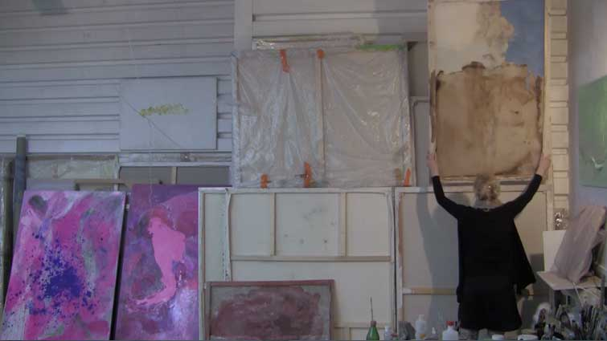

SZTUKA UKLADNIA

SZTUKA UKLADANIA 2014
video art poruszajacy temat nadprodukcji obiektow sztuki, sposobow radzenia sobie z ich magazynowaniem, odnajdowaniem sie z nimi w przestrzeni pracowni. Video powinien obejrzec kazdy kto byl u mnie w pracowni, oraz kazdy potencjalny kolekcjoner, kurator, kryrtyk.
Bo: "najpierw herbata..."